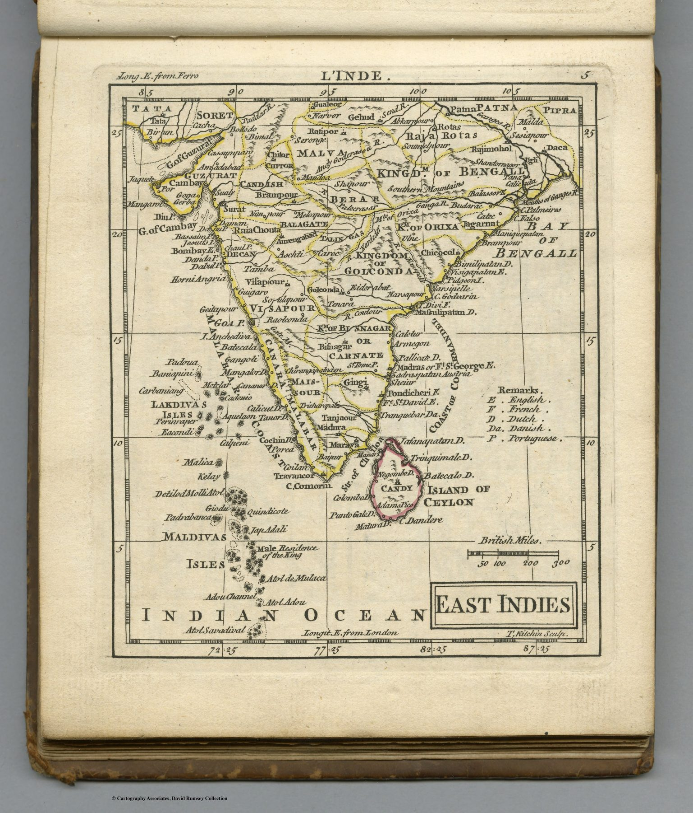

← Baroque Mughals and Companies

The pocket atlas
Dury’s New General and Universal Atlas contained forty-five small maps intended for convenient consultation. This plate, engraved by Thomas Kitchin, compresses the East Indies into a sheet only about thirteen by eleven centimetres.
A derivative map at a consequential date
The geography is conventional, following the French outline of the peninsula. Its date is nevertheless significant. The Treaty of Paris ended the Seven Years’ War in 1763, while the East India Company had already gained a decisive position in Bengal after Plassey. The map shows the print culture in which Britons were learning to picture India as theirs.
Bilingual and portable
French titles accompanying the English atlas reinforce the international circulation of cartographic models. Geographic authority moved readily between Paris, Amsterdam, Venice and London even as the states and companies represented on the maps competed violently.
The gaze
Thirteen by eleven centimetres, French outline, English atlas, the year of the Treaty of Paris. Kitchin’s tiny plate carries no news of Plassey, and that silence is the interest: the map trade went on reducing the old French India for British pockets while the Company was acquiring the real one.
In the Deccan timeline
The Carnatic wars (1746–1763) · Bussy and the French at Hyderabad (1751–1758, Circars to 1766) · Udgir, 1760 (3 February 1760) · Panipat, 1761 (14 January 1761) · Madhavrao I (1761–1772) · The first Anglo-Mysore war (1767–1769)